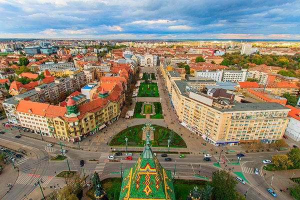

- 
Centrul Timișoarei Centrul este primul dintre locurile cu care vei dori să faci cunoștiință imediat ce ai ajuns și ți-ai lăsat bagajele în cameră...
-
Vechea Cetate Dacă pornești de la Operă în sus pe strada Mărășești, ai ocazia să mai bifezi și alte puncte importante de vizitat cu un patrimoniu cultural...
-
Muzeul Satului Bănățean Plimbarea în muzeul satului, construcțiile autentice de demult te vor introduce în viața bănățenilor din secolele trecute...